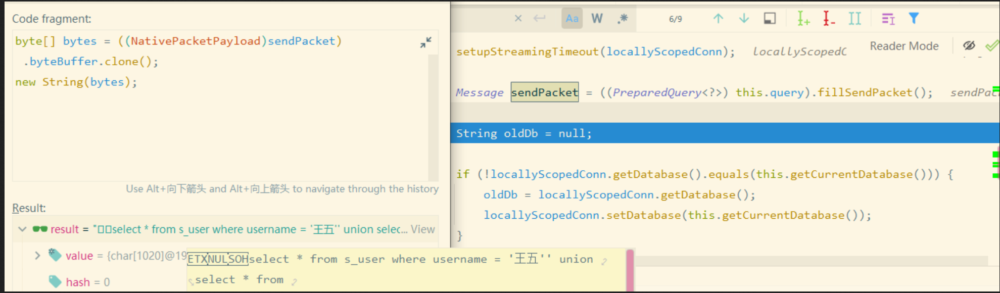

预编译sql防御
Last Update:
Word Count:
Read Time:
前言
为啥用 PreparedStatement 预编译的 SQL 就不会有被 SQL 注入的风险？
第一时间我联想到的是八股文中关于 Mybatis 的脚本 ${} 和 #{} 的问题，不过再想想，为啥 ${} 会有 SQL 注入的风险，而 #{} 就没有？是因为到 PreparedStatement 做了什么处理吗？不知道。
然后我又想了想，预编译到底是个什么概念？预编译或者不预编译的 SQL 对数据库来说有什么区别吗？PreparedStatement 又在这个过程中扮演了怎样的角色？不知道。
好吧，我发现我确实对这个问题一无所知，看来需要亲自研究一下了。(这是真的)
一、数据库预编译
当我们说到关于持久层框架的功能，必然需要先想想这个功能的源头到底是不是直接通过数据库提供的。实际上和事务一样，SQL 预编译的功能也是需要数据库提供底层支持的。
1、预编译SQL的用法
以 MySQL 为例，在 MySQL 中，所谓预编译其实是指先提交带占位符的 SQL 模板，然后为其指定一个 key，MySQL 先将其编译好，然后用户再拿着 key 和占位符对应的参数让 MySQL 去执行，用法有点像 python 中的 format 函数。
一个标准的预编译 SQL 的用法如下：
1 | |
先通过 prepare 设置一个 SQL 模板，然后通过 execute 提交参数，MySQL 会自行根据参数替换占位符，到最后执行的 SQL 就是：
1 | |
2、预编译的原理
这里有个有意思问题，按网上的说法，prepare 执行的时候实际上 SQL 已经编译完了，所以可以防止注入，因为后续不管塞什么参数都不可能在调整语法树了，换个角度想，这是不是说明，如果我们一开始就让 prepare 执行的 SQL 模板的关键字变成占位符，是不是应该在这个时候就编译不通过？
比如，可以把查询的表名改成占位符：
1 | |
实际上也确实不行，因为编译时必须确定主表，因此在 from 后面加占位符会导致预编译不通过。
那么只在查询字段里面套一个嵌套查询呢？
1 | |
查询成功了，不过得到的结果的固定的 (select * from s_user) 这个字符串，我们检查一下 MySQL 的执行日志，看看最终执行的 SQL 变成什么样了：
1 | |
显然，(select * from s_user) 参数本身被直接转义为了一串普通的字符串，我们试图“注入”的 SQL 片段完全不会生效。
换而言之，对于预编译 SQL 来说，我们作为模板的参数化 SQL 已经完成的编译过程，这段 SQL 包含几条有效语句？查哪张表？查哪些字段？作为条件的字段有哪些？…这些在 prepare 语句执行完后都是固定的，此后我们再通过 execute 语句塞进去的任何参数，都会进行转义，不会再作为 SQL 的一部分。这就是为什么说预编译 SQL 可以防止注入的原因。
二、JDBC的预编译
现在我们知道了预编译在数据库中是个怎样的功能，那么 JDBC 又是如何把这个功能提供给开发者使用的呢？
1、PreparedStatement
从最开始学 JDBC 时，我们就知道通过 JDBC 连接数据库一般是这样写的：
1 | |
这里有一个关键角色 PreparedStatement，相比起它的父接口 Statement，它最大的变化是多了各种格式为 setXXX 的、用于设置与占位符对应的参数的方法，显然它正对应着上文我们提到的预编译 SQL。
2、虚假的“预编译”
不过事情显然没有这么简单，我们依然以 MySQL 为例，默认情况下 MySQL 驱动包提供的 PreparedStatement 实现类 ClientPreparedStatement 也能起到防止 SQL 注入的功能，但是方式跟我们想的不太一样。
假设现有如下代码，我们尝试模拟进行一次 SQL 注入：
1 | |
运行上述代码并正常的请求数据库，然后我们去数据库执行日志中查看对应的执行的 SQL 如下，会发现只有这么一行：
1 | |
显然跟我们上文说到的先 prepare 再 execute 流程不同，带有占位符的原始 SQL 模板并没有在日志中出现，但是代码中的 王五' 确实也被转义为了 '王五''。
数据库到底收到了哪些数据？
那么数据库到底拿到的就是这条 SQL，还是原始的 SQL 模板 + 参数呢？
为了了解这一点，我们打断点跟踪 ClientPreparedStatement.executeQuery 方法，一路找到它组装请求数据库的参数的那一行代码：
1 | |
最后我们会进入 AbstractPreparedQuery.fillSendPacket 这个方法，这里主要干的事是把我们带占位符的原始 SQL 模板和参数合并为最终要执行的 SQL ，并封装到 NativePacketPayload 对象，用于在后续发起 TCP 请求时把 SQL 参数转为二进制数据包。
为了验证这一点，我们先拿到 sendPacket 对象，再获取里面的字节数组，最后转为字符串：

可以看到内容就是已经格式化完的 SQL：
1 | |
现在答案就很明显了，转义在 preparedStatement.setString 方法调用的时候完成，而 PreparedStatement 在发起请求前就把转义后的参数和 SQL 模板进行了格式化，最后发送到 MySQL 的时候就是一条普通的 SQL。
鉴于此，我们可以说 MySQL 提供的 PreparedStatement 在默认情况下是假的“预编译”，它只不过在设置参数的时候帮我们对参数做了一下转义，但是最后发送到数据库的依然是普通的 SQL，而不是按预编译 SQL 的方式去执行。
3、真正的预编译
好吧，那既然 MySQL 提供了这个预编译的功能，那通过 JDBC 肯定也还是有办法用上真正的预编译功能的，实际上要做到这点也很简单，就是直接在驱动的 url 上配上 useServerPrepStmts=true ，这样就会真正的启用 MySQL 的预编译功能。
依然以上文的代码为例：
1 | |
设置了 useServerPrepStmts=true 后再执行代码，去数据库查看执行日志有：
1 | |
此时 MySQL 的预编译功能就真正的生效了。
我们回到 ClientPreparedStatement.executeQuery 创建 sendPacket 地方看，此时通过 ((PreparedQuery<?>) this.query).fillSendPacket(); 拿到的 Message 对象是 null，然后进一步追踪到最后向 MySQL 发送请求的地方 NativeSession.execSQL：
1 | |
更具体的实现就不看了，基本都是关于序列化请求参数的逻辑。
三、Myabtis占位符与预编译
至此问题真相大白了，不过还是顺带扯一下八股文常提到的 Mybatis 占位符 #{} 与 ${} 是如何影响 SQL 注入问题的。
当然，看完上面的内容其实就已经很好猜到原因了：
#{}对应的内容会作为 SQL 参数的一部分通过PreparedStatement.setXXX装入请求；${}对应的内容会直接作为 SQL 模板的一部分，而不会视为独立的请求参数；
在 Mybatis 中，用于解析占位符的类为 GenericTokenParser ，根据它我们很容易在源码中找到占位符的处理方法，从而验证我们的猜想：
其中，#{} 占位符在 SqlSourceBuilder.ParameterMappingTokenHandler.handleToken 方法中处理：
1 | |
可见 #{} 占位符会被解析为 ? 占位符，而对于的数据会被添加到 parameterMappings 用于后续塞到 PreparedStatement。
而 ${} 占位符在 PropertyParser.VariableTokenHandler.handleToken 方法中被处理：
1 | |
若占位符符合规范，则占会根据占位符中的内容去用户给定的参数中取值，并且让值直接替换掉原本 SQL 脚本中的 ${} 占位符。
这就是“ Mybatis 用 #{} 而不是 ${} 可以防止 SQL 注入的真相。
总结
回顾一下全文，当我们说“预编译”的时候，其实这个功能来自于数据库的支持，它的原理是先编译带有占位符的 SQL 模板，然后在传入参数让数据库自动替换 SQL 中占位符并执行，在这个过程中，由于预编译好的 SQL 模板本身语法已经定死，因此后续所有参数都会被视为不可执行的非 SQL 片段被转义，因此能够防止 SQL 注入。
当我们通过 JDBC 使用 PreparedStatement 执行预编译 SQL 的时候，此处的预编译实际上是假的预编译（至少 MySQL 是如此，不过其他数据库仍待确认），PreparedStatement 只是在设置参数的时候自动做了一层转义，最终提交给数据库执行的 SQL 仍然是单条的非预编译 SQL。
而当我们通过在驱动 url 上开启 useServerPrepStmts 配置后，预编译就会真正的生效，驱动包发往数据库的请求就会分成带占位符的 SQL 模板和参数，到了数据库再由数据库完成格式化并执行。
此外，八股文常提到的“Mybatis 的 #{} 相比 ${} 可以防止 SQL 注入”这一点，本质上是因为 #{} 占位符会被解析为 SQL 模板中的 ? 占位符，而 ${} 占位符会被直接解析为 SQL 模板的一部分导致的。
最后脑补一下，由于 useServerPrepStmts 不开启时 PreparedStatement 的预编译实际上是假的预编译，所以理论上使用 #{} 也并非绝对安全，如果有办法绕过 PreparedStatement 的检查，那么数据库拿到被注入过的 SQL 直接执行，依然有暴毙的风险。